(a)
Refer to the circuit diagram of P10.41 in the textbook.
Draw the  circuit for the Figure.
circuit for the Figure.
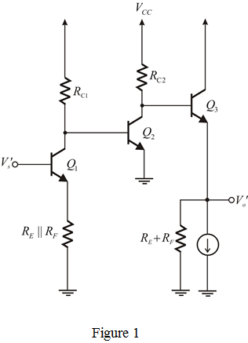
(a)
Refer to the circuit diagram of P10.41 in the textbook.
Draw the circuit for the Figure.
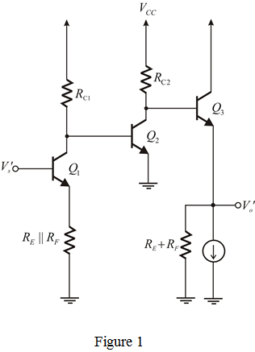
Draw the circuit for determine .
.
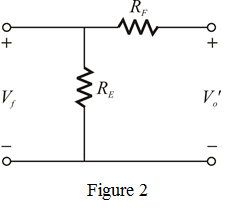
(b)
The closed loop voltage gain is given by
Now if  is large, that is 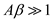, then
is large, that is 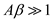, then
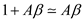
Hence,
From the  circuit,
circuit,
Apply voltage division rule,
Hence,
Therefore,
Hence, the closed loop voltage gain  is.
is.
Consider the following data:
Determine the value of 
Feedback gain is,
That implies,
Solve for  .
.
Therefore,

(d)
Consider the following data:
We need to determine the approximate values of .
Emitter resistance of transistor  is,
is,
Emitter resistance of transistor  is,
is,
Emitter resistance of transistor  is,
is,
The closed loop gain of transistor  is,
is,
That implies,
We have,
Substitute the known values in the equation.
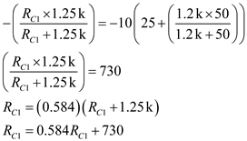
Therefore, collector resistance  is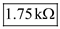.
is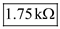.
 is,
is,
That implies,
Substitute corresponding value.
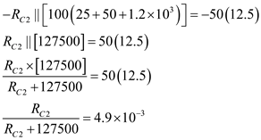
Therefore, collector resistance is 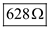.
is 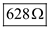.
The closed loop gain of transistor  is,
is,
Hence,
(e)
The overall open loop voltage gain is given by
The feedback factor is given by
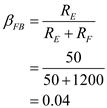
Hence, the overall closed loop gain is given by
Therefore,
(f)
From the circuit,
The input resistance without feedback is
The input resistance of the closed loop amplifier is,
Therefore, the required input resistance is,
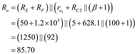
The output resistance of the closed loop amplifier is,
Therefore, the required output resistance is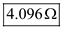.